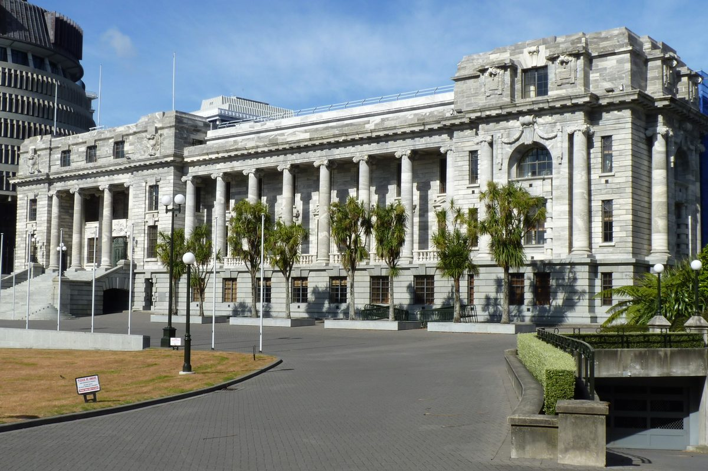
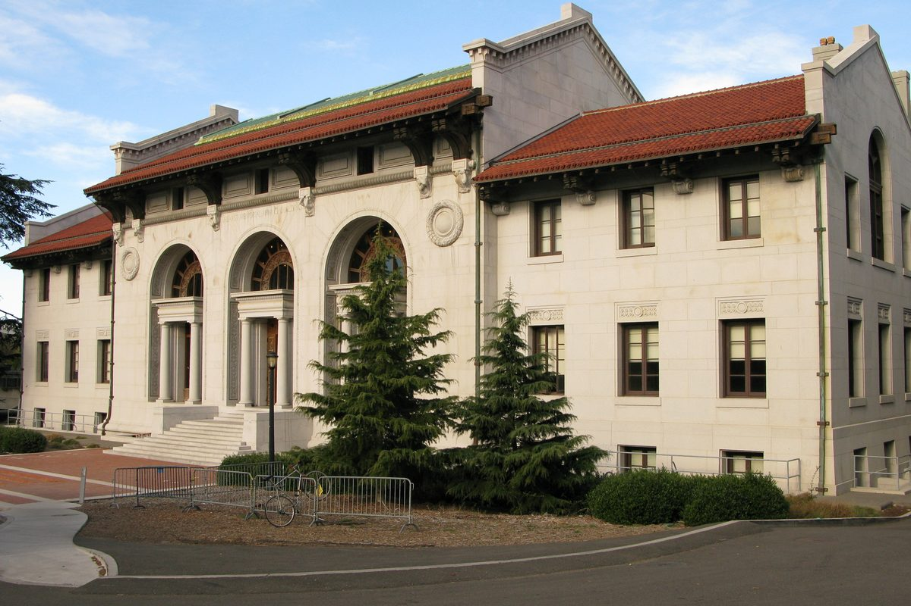
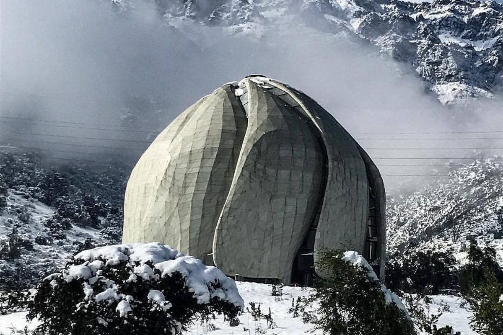
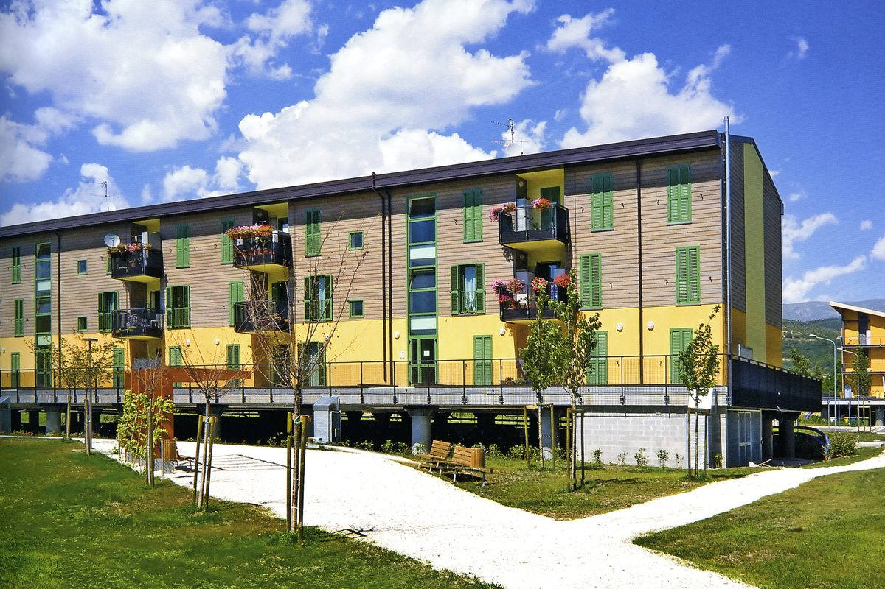
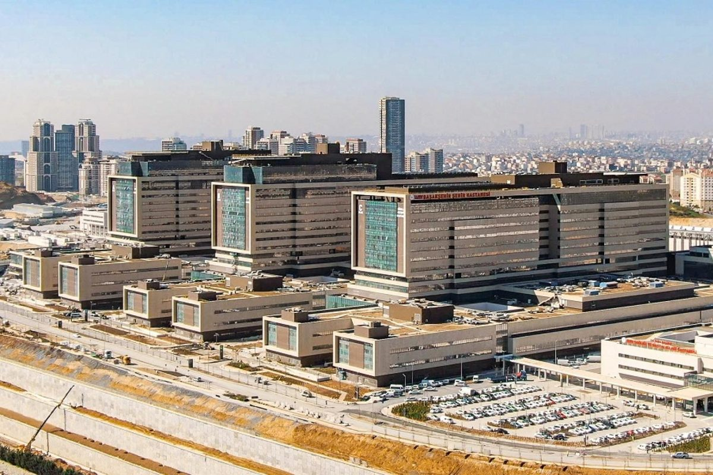

Learn
Explore seismically isolated buildings around the world with our interactive database. View by country, isolation system, device, use or year.
Featured isolated buildings

Parliament HouseWellington, New Zealand
Hearst Memorial Mining BuildingUniversity of California, Berkeley, USA
Santiago Baháʼí TempleSantiago, Chile
Il Progetto C.A.S.E.L’Aquila, Italy Ishinomaki Red Cross HospitalIshinomaki, Japan
Ishinomaki Red Cross HospitalIshinomaki, Japan
Başakşehir Çam & Sakura City HospitalIstanbul, TurkeySurveys underway
National and regional surveys are planned for Italy, Japan, New Zealand, South America, Turkey and the U.S. See Participate to take part.
Status of each survey to be added.
Survey findings
Findings will be published here as surveys are completed.